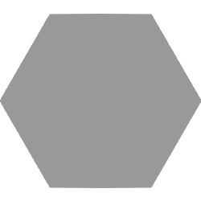
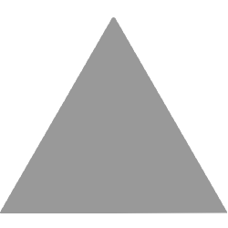
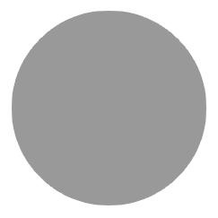

On the Subject of Plagiarism
+ +
A Plagiarism module has a Pass button (checkmark) and a Report button (hazard). A window displays a piece of paper inside the module with multiple colored shapes.
Grade four papers by determining if the resulting string of characters matches a modified version of the original source.
Take the leftmost digit of the serial number. Use the table on this page to determine a shape. Remove every instance of this shape from each of the four papers and from the sequence of 60 shapes on Page 2.
Then, take the second-leftmost digit of the serial number. Use the same table below to convert it into a color. Remove every instance of this color from each of the four papers and from the sequence of 60 colors on Page 2.
| Shape: |  |  |  |  |  |
| Digits: | 0/5 | 1/6 | 2/7 | 3/8 | 4/9 |
| Color: |  |  |
Remove any spaces on the current paper and within both sequences. Each sequence should now be 48 items long. Assign the first shape the first color in the list, the second shape the second color, and so on.
All four papers will be compared to this sequence of 48 colored shapes.
If the remaining characters on the paper are an exact match with a subset of characters within the sequence, press the Report button. Otherwise, press the Pass button. In either case, the current paper will be removed and the next paper in the stack will be uncovered.
An incorrect Report or Pass will result in a strike. Every paper must be graded, correctly or not, to defuse the module.